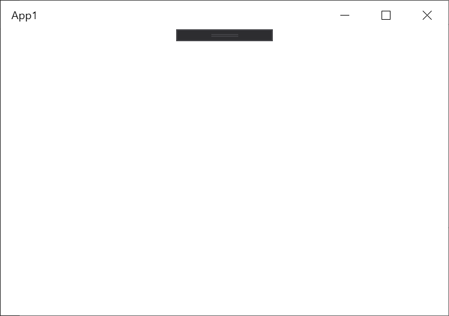
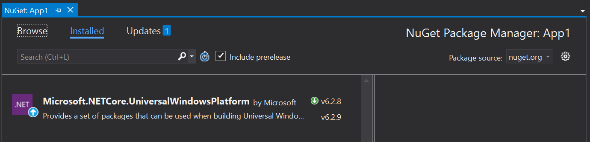
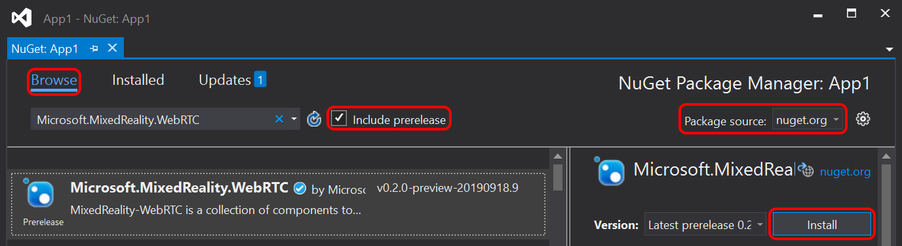
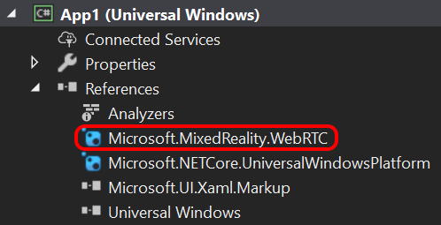

Creating a project
In this tutorial we create a C# UWP application with a simple XAML-based UI to render video.
Note
At this time there is no solution to render raw video frames from a .NET Core 3.0 application that is simple and short enough to be used in a turorial. Instead, we use the MediaPlayerElement XAML control from UWP which provides the necessary API. Its WPF equivalent MediaElement unfortunately does not allow specifying a custom video source other than an URI-based source like a file on disk.
Note
This tutorial assumes that the host device where the app will be running during the tutorial has access to:
- a webcam, or any other video capture device recognized by WebRTC
- a microphone, or any other audio capture device recognized by WebRTC
Generate the project
Open Visual Studio 2019 and select Create a new project.

Filter projects by Language = C# and Platform = UWP to find the Blank App (Universal Window) project template.

When prompted to select a platform version, chose a version of at least Windows 10, version 1803 (10.0; Build 17134) or higher, as older versions are not officially supported by MixedReality-WebRTC. For HoloLens 2 development, it is strongly recommended to select at least Windows 10, version 1903 (10.0; Build 18362) to be able to use the latest OS APIs, although those are not used in this tutorial.
Visual Studio 2019 generates a C# project (.csproj) and solution (.sln). In this tutorial we use the default name App1, therefore we get the following hierarchy:
- App1/
- Assets/
- App.xaml
- App.xaml.cs
- App1.csproj
- MainPage.xaml
- MainPage.xaml.cs
- App1.sln
At this point the project is already in a working state, although not yet functional. Press F5 or select in the menu Debug > Start Debugging to build and launch the application. A blank window titles "App1" should appear.

Note: At the top of the window, the XAML debug bar allows access to debugging feature for the UI. This bar only appears while debugging, not when running the app outside Visual Studio 2019. It can be ignored.
Add a dependency to MixedReality-WebRTC
In order to use the MixedReality-WebRTC project in this new App1 application, we will add a dependency to its C# NuGet package hosted on nuget.org. This is by far the easiest way, although a locally-built copy of the Microsoft.MixedReality.WebRTC.dll assembly could also be alternatively used (but this is out of the scope of this tutorial).
In the Solution Explorer, right-click on the App1 (Universal Windows) C# project and select the Manage NuGet Packages... menu entry. This opens a new tab NuGet: App1 which allows configuring the NuGet dependencies for this project alone. The Installed tab contains the list of NuGet dependencies already installed, and should contain the Microsoft.NETCore.UniversalWindowsPlatform which was already installed by Visual Studio when creating the project.

Select the Browse tab and, after making sure that the Package source is set to nuget.org, select the Microsoft.MixedReality.WebRTC.UWP NuGet package and click Install.

Note: If you cannot find the package, make sure that Include prerelease is checked, which disables filtering out preview packages (those packages with a version containing a suffix like "-preview" after the X.Y.Z version number).
This will download from nuget.org and install the Microsoft.MixedReality.WebRTC.UWP.nupkg NuGet package, which contains the Microsoft.MixedReality.WebRTC.dll assembly, as well as its native dependencies (x86, x64, ARM) for the UWP platform.
After that, the App1 project should contain a reference to the package.

Test the reference
In order to ensure everything works fine and the Microsoft.MixedReality.WebRTC assembly can be used, we will use one of its functions to list the video capture devices, as a test. This makes uses of the static method DeviceVideoTrackSource.GetCaptureDevicesAsync(). This is more simple than creating objects, as there is no clean-up needed after use.
First, because this sample application is a UWP application, it needs to declare some capabilities to access the microphone and webcam on the host device. In the Solution Explorer of Visual Studio, double-click on the Package.appxmanifest to open the AppX manifest of the app and select the Capabilities tab. Check Microphone and Webcam, and confirm that Internet (Client) is already checked.

Warning
Currently the Microphone capability is mandatory, even if not using audio. This is due to a limitation of the underlying native implementation which attempts to access the microphone while initializing the audio module (see #360). The Webcam capability however is only needed if using video.
Next, edit MainPage.xaml.cs:
At the top of the file, add some
usingstatement to import theMicrosoft.MixedReality.WebRTCassembly. Also import theSystem.Diagnosticsmodule, as we will be using theDebuggerclass to print debug information to the Visual Studio output window. Finally, import theWindows.Media.Capturemodule to be able to request access to the microphone and webcam, and theWindows.ApplicationModelmodule to handle resource clean-up.using Microsoft.MixedReality.WebRTC; using System.Diagnostics; using Windows.Media.Capture; using Windows.ApplicationModel;In the
MainPageconstructor, register a handler for theLoadedevent, which will be fired once the XAML user interface finished loading. For now it is not required to wait on the UI to callMicrosoft.MixedReality.WebRTCmethods. But later when accessing the UI to interact with its controls, either to get user inputs or display results, this will be required. So as a best practice we start doing so right away instead of invoking some code directly in theMainPageconstructor. Also register a handler for theApplication.Suspendingevent to clean-up resources on exit.public MainPage() { this.InitializeComponent(); this.Loaded += OnLoaded; Application.Current.Suspending += App_Suspending; }Create the event handler
OnLoaded()and use it to request access from the user to the microphone and camera, and enumerate the video capture devices. TheMediaCapture.InitializeAsync()call will prompt the user with a dialog to authorize access to the microphone and webcam. The latter be must authorized before callingDeviceVideoTrackSource.GetCaptureFormatsAsync(), while the former will be needed in the following of the tutorial for calls likePeerConnection.AddLocalAudioTrackAsync().private async void OnLoaded(object sender, RoutedEventArgs e) { // Request access to microphone and camera var settings = new MediaCaptureInitializationSettings(); settings.StreamingCaptureMode = StreamingCaptureMode.AudioAndVideo; var capture = new MediaCapture(); await capture.InitializeAsync(settings); // Retrieve a list of available video capture devices (webcams). IReadOnlyList<VideoCaptureDevice> deviceList = await DeviceVideoTrackSource.GetCaptureDevicesAsync(); // Get the device list and, for example, print them to the debugger console foreach (var device in deviceList) { // This message will show up in the Output window of Visual Studio Debugger.Log(0, "", $"Webcam {device.name} (id: {device.id})\n"); } }Create the event handler
App_Suspending(). For now there is nothing to do from it.private void App_Suspending(object sender, SuspendingEventArgs e) { }
Launch the app again. The main window is still empty, but the Output window of Visual Studio 2019 (View > Output, or Alt + 2) should show a list of devices. This list depends on the actual host device running the app, but looks something like:
Webcam <some device name> (id: <some device ID>)
Note that there might be multiple lines if multiple capture devices are available. In general the first one listed will be the default used by WebRTC, although it is possible to explicitly select a device (see DeviceVideoTrackSource.CreateAsync).
If this is the first time that MediaCapture.InitializeAsync() is requesting access to the webcam and microhpone, Windows displays a prompt asking the user for confirmation. You must click Yes, otherwise access to the microphone and webcam will be denied, and WebRTC will not be able to use them. This is part of the standard UWP capability mechanism for security and privacy.

If you clicked No by mistake, the prompt will not appear again and access will be silently denied on next runs. To change this access setting again, go to the Windows Settings > Privacy > Microphone, find the App1 application and toggle its access On. Do the same for the webcam from the Settings > Privacy > Camera page.

Next : Creating a peer connection